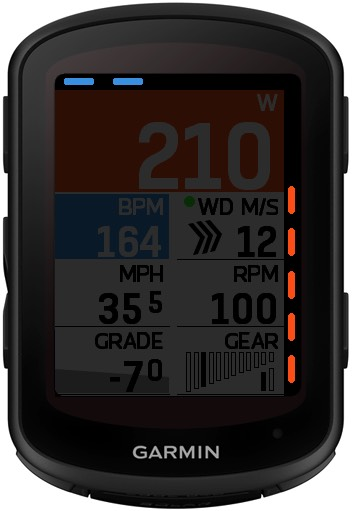

모듈 소개¶
I 실시간 모니터링 데이터¶
1. 현재 파워¶
실시간 사이클링 파워 출력을 표시합니다.
색상
이 모듈은 배경 색상을 표시할 수 있습니다. 색상 순서는 ConnectIQ 앱에서 두 가지 스타일 중에서 선택할 수 있습니다. 그러나 사용자는 개별 색상이나 구역 범위를 사용자 지정할 수 없습니다.
- Garmin 스타일: 회색-파란색-녹색-노란색-주황색-빨간색-보라색 (Zone1~Zone7)
- Wahoo 스타일: 회색-짙은 파란색-연한 파란색-녹색-노란색-주황색-빨간색 (Zone1~Zone7)
2. 현재 속도¶
현재 사이클링 속도를 표시합니다. 단위는 Garmin Connect에서 사용자가 설정한 단위(kph/mph)와 일치합니다.
54. 평균 속도 표시기¶
현재 속도 모듈 내에서 현재 속도와 평균 속도를 비교하기 위해 켜거나 끌 수 있는 설정입니다. ConnectIQ 앱에서 설정할 수 있습니다. "화살표"와 "배경" 두 가지 표시 모드가 있습니다.
- "화살표"

- 위: 평균 속도보다 높음
- 아래: 평균 속도보다 낮음
- 표시되지 않음: 평균 속도와 동일하거나 라이딩이 시작되지 않음
- "배경"
- 빨간색: 평균 속도보다 낮음
- 녹색: 평균 속도보다 높음
3. 현재 심박수¶
실시간 심박수 데이터를 표시합니다.
색상
이 모듈은 배경 색상을 설정할 수 있습니다. 색상 순서는 ConnectIQ 앱에서 두 가지 스타일 중에서 선택할 수 있습니다. 그러나 사용자는 개별 색상이나 구역 범위를 사용자 지정할 수 없습니다.
- Garmin 스타일: 회색-회색-파란색-녹색-노란색-빨간색 (<Zone1, Zone1~Zone5)
- Wahoo 스타일: 회색-파란색-녹색-노란색-주황색-빨간색 (<Zone1, Zone1~Zone5)
4. 현재 케이던스¶
실시간 케이던스 값을 표시합니다.
5. 현재 고도¶
현재 고도를 표시합니다. 단위는 Garmin Connect에서 사용자가 설정한 단위(m/ft)와 일치합니다.
6. 현재 경사도*¶
현재 경사도를 표시합니다.
*Garmin 공식은 데이터 인터페이스를 제공하지 않으므로 계산된 데이터는 부정확하거나 오류가 있을 수 있습니다
색상
이 모듈은 배경 색상을 표시할 수 있습니다. 색상은 해당 경사도에 따라 변경되지만 사용자는 색상이나 경사도 범위를 사용자 지정할 수 없습니다.
| 예시 |  |
 |
 |
 |
||
|---|---|---|---|---|---|---|
| 경사도 범위 | < 0.5% | 0.5%~3.99% | 4%~7.99% | 8%~11.99% | 12%~19.99% | > 20% |
II 평균 및 누적 데이터¶
7. 3초 평균 파워*¶
지난 3초 동안의 평균 파워를 표시합니다. 색상 표시는 실시간 파워와 동일합니다.
*Garmin 공식은 데이터 인터페이스를 제공하지 않으므로 계산된 데이터는 부정확하거나 오류가 있을 수 있습니다
8. 5초 평균 파워*¶
지난 5초 동안의 평균 파워를 표시합니다. 색상 표시는 실시간 파워와 동일합니다.
*Garmin 공식은 데이터 인터페이스를 제공하지 않으므로 계산된 데이터는 부정확하거나 오류가 있을 수 있습니다
9. 10초 평균 파워*¶
지난 10초 동안의 평균 파워를 표시합니다. 색상 표시는 실시간 파워와 동일합니다.
*Garmin 공식은 데이터 인터페이스를 제공하지 않으므로 계산된 데이터는 부정확하거나 오류가 있을 수 있습니다
10. 랩 평균 파워*¶
현재 랩의 평균 파워를 표시합니다.
*Garmin 공식은 데이터 인터페이스를 제공하지 않으므로 계산된 데이터는 부정확하거나 오류가 있을 수 있습니다
11. 평균 속도¶
현재 활동의 평균 속도를 표시합니다.
12. 활동 시간¶
현재 활동의 지속 시간을 표시합니다.
13. 랩 시간*¶
현재 랩의 지속 시간을 표시합니다.
*Garmin 공식은 데이터 인터페이스를 제공하지 않으므로 계산된 데이터는 부정확하거나 오류가 있을 수 있습니다
14. 거리¶
현재 활동의 누적 주행 거리를 표시합니다.
15. 칼로리¶
현재 활동에서 소모된 칼로리를 표시합니다.
16. 5초 평균 파워*¶
지난 5초 동안의 평균 파워를 표시합니다. 색상 표시는 실시간 파워와 동일합니다.
*Garmin 공식은 데이터 인터페이스를 제공하지 않으므로 계산된 데이터는 부정확하거나 오류가 있을 수 있습니다
17. 평균 심박수¶
현재 활동의 평균 심박수를 표시합니다.
18. 총 상승*¶
현재 활동의 총 상승 고도를 표시합니다.
*Garmin 공식은 데이터 인터페이스를 제공하지 않으므로 계산된 데이터는 부정확하거나 오류가 있을 수 있습니다
19. 총 하강*¶
현재 활동의 총 하강 고도를 표시합니다.
*Garmin 공식은 데이터 인터페이스를 제공하지 않으므로 계산된 데이터는 부정확하거나 오류가 있을 수 있습니다
20. 랩 평균 심박수*¶
현재 랩의 평균 심박수를 표시합니다.
*Garmin 공식은 데이터 인터페이스를 제공하지 않으므로 계산된 데이터는 부정확하거나 오류가 있을 수 있습니다
21. 총 일량 (KJ)*¶
현재 활동의 총 일량을 킬로줄(KJ) 단위로 표시합니다.
*Garmin 공식은 데이터 인터페이스를 제공하지 않으므로 계산된 데이터는 부정확하거나 오류가 있을 수 있습니다
22. 랩 거리*¶
현재 랩의 거리를 표시합니다.
*Garmin 공식은 데이터 인터페이스를 제공하지 않으므로 계산된 데이터는 부정확하거나 오류가 있을 수 있습니다
23. 평균 케이던스¶
현재 활동의 평균 케이던스를 표시합니다.
24. 랩 평균 속도*¶
현재 랩의 평균 속도를 표시합니다.
*Garmin 공식은 데이터 인터페이스를 제공하지 않으므로 계산된 데이터는 부정확하거나 오류가 있을 수 있습니다
III 최대값¶
25. 최대 파워¶
현재 활동의 최대 파워를 표시합니다.
26. 최대 심박수¶
현재 활동의 최대 심박수를 표시합니다.
27. 최대 속도¶
현재 활동의 최대 속도를 표시합니다.
28. 최대 케이던스¶
현재 활동의 최대 케이던스를 표시합니다.
IV 트레이닝 지표¶
29. 현재 파워-체중 비율¶
현재 활동의 실시간 파워-체중 비율을 W/Kg로 표시합니다. 파워는 MyGahoo 설정 페이지 입력에서 가져오고, 체중은 Garmin 개인 프로필 페이지 구성에서 가져옵니다.
30. 3초 평균 파워-체중 비율*¶
지난 3초 동안의 평균 파워-체중 비율을 W/Kg로 표시합니다.
*Garmin 공식은 데이터 인터페이스를 제공하지 않으므로 계산된 데이터는 부정확하거나 오류가 있을 수 있습니다
31. 10초 평균 파워-체중 비율*¶
지난 10초 동안의 평균 파워-체중 비율을 W/Kg로 표시합니다.
*Garmin 공식은 데이터 인터페이스를 제공하지 않으므로 계산된 데이터는 부정확하거나 오류가 있을 수 있습니다
32. 랩 평균 파워-체중 비율*¶
현재 랩의 평균 파워-체중 비율을 W/Kg로 표시합니다.
*Garmin 공식은 데이터 인터페이스를 제공하지 않으므로 계산된 데이터는 부정확하거나 오류가 있을 수 있습니다
33. NP™ (정규화 파워)*¶
현재 활동의 정규화 파워를 표시합니다.
데이터 손실 위험
활동 중에 MyGahoo 필드를 "다시 추가"하거나 다른 라이딩 모드로 들어가면 이 모듈의 데이터가 지워집니다. (그러나 Garmin 자체에 의해 기록된 활동은 영향을 받지 않으며, MyGahoo만 이러한 데이터를 다시 0부터 누적하기 시작합니다).
™정규화 파워(NP) 및 트레이닝 스트레스 점수(TSS)는 Peaksware, LLC의 등록 상표입니다.
*Garmin 공식은 데이터 인터페이스를 제공하지 않으므로 계산된 데이터는 부정확하거나 오류가 있을 수 있습니다
34. TSS™ (트레이닝 스트레스 점수)*¶
현재 활동의 트레이닝 스트레스 점수를 표시합니다.
데이터 손실 위험
활동 중에 MyGahoo 필드를 "다시 추가"하거나 다른 라이딩 모드로 들어간 후 현재 모드로 돌아오면 이 모듈의 데이터가 지워집니다. (그러나 Garmin 자체에 의해 기록된 활동은 영향을 받지 않으며, MyGahoo만 이러한 데이터를 다시 0부터 누적하기 시작합니다).
™정규화 파워(NP) 및 트레이닝 스트레스 점수(TSS)는 Peaksware, LLC의 등록 상표입니다.
*Garmin 공식은 데이터 인터페이스를 제공하지 않으므로 계산된 데이터는 부정확하거나 오류가 있을 수 있습니다
35. W'Balance*¶
남은 무산소 능력을 나타내는 실시간 W'Balance를 표시합니다.
W'Balance는 다음 공식으로 계산됩니다:
W'Balance = W' - ∫(P(t) - CP)dt (P(t) > CP인 경우)
W'Balance = W' + ∫(CP - P(t))dt × (W' - W'Balance)/W' (P(t) ≤ CP인 경우)
여기서: - W' = 무산소 작업 용량 (J) - CP = 크리티컬 파워 (W) - P(t) = 시간 t에서의 파워 (W)
*Garmin 공식은 데이터 인터페이스를 제공하지 않으므로 계산된 데이터는 부정확하거나 오류가 있을 수 있습니다
V 내비게이션 정보¶
36. 목적지까지의 거리¶
내비게이션 목적지까지의 남은 거리를 표시합니다.
37. 목적지까지의 예상 시간*¶
내비게이션 목적지에 도달하는 데 걸리는 예상 시간을 표시합니다.
*Garmin 공식은 데이터 인터페이스를 제공하지 않으므로 계산된 데이터는 부정확하거나 오류가 있을 수 있습니다
38. 예상 도착 시간*¶
내비게이션 목적지에 대한 예상 도착 시간을 표시합니다.
*Garmin 공식은 데이터 인터페이스를 제공하지 않으므로 계산된 데이터는 부정확하거나 오류가 있을 수 있습니다
VI 장비 정보¶
39. 기어 (톱니)¶
현재 체인링/카세트의 톱니 수를 표시합니다. 예: 52/13
40. 기어 (인덱스)¶
현재 체인링/카세트 인덱스 번호를 표시합니다. 예: 1/7
41. 기어 비율¶
체인링을 카세트 톱니로 나눈 현재 변속 비율을 표시합니다. 예: 4.02
42. 기어 차트¶
기어 정보를 그래픽으로 표시합니다.
VII 데이터 분석¶
43. 실시간 좌우 밸런스¶
현재 좌우 파워 밸런스를 표시합니다. % 기호 없이 백분율로 표시됩니다. 예: 52-48
44. 3초 평균 좌우 밸런스*¶
3초 동안의 평균 좌우 파워 밸런스 비율을 표시합니다.
*Garmin 공식은 데이터 인터페이스를 제공하지 않으므로 계산된 데이터는 부정확하거나 오류가 있을 수 있습니다
45. 파워 구역 히스토그램*¶
다양한 파워 구역에 걸친 시간 분포를 표시합니다.
데이터 손실 위험
활동 중에 MyGahoo 필드를 "다시 추가"하거나 다른 라이딩 모드로 들어간 후 현재 모드로 돌아오면 이 모듈의 데이터가 지워집니다. (그러나 Garmin 자체에 의해 기록된 활동은 영향을 받지 않으며, MyGahoo만 이러한 데이터를 다시 0부터 누적하기 시작합니다).
*Garmin 공식은 데이터 인터페이스를 제공하지 않으므로 계산된 데이터는 부정확하거나 오류가 있을 수 있습니다
46. 심박수 구역 히스토그램*¶
다양한 심박수 구역에 걸친 시간 분포를 표시합니다.
데이터 손실 위험
활동 중에 MyGahoo 필드를 "다시 추가"하거나 다른 라이딩 모드로 들어간 후 현재 모드로 돌아오면 이 모듈의 데이터가 지워집니다. (그러나 Garmin 자체에 의해 기록된 활동은 영향을 받지 않으며, MyGahoo만 이러한 데이터를 다시 0부터 누적하기 시작합니다).
*Garmin 공식은 데이터 인터페이스를 제공하지 않으므로 계산된 데이터는 부정확하거나 오류가 있을 수 있습니다
VIII 환경 정보¶
47. 시계¶
현재 시간을 표시합니다.
48. 바람*¶
현재 풍속과 상대적/절대적 풍향을 표시합니다.
*Garmin 공식은 데이터 인터페이스를 제공하지 않으므로 계산된 데이터는 부정확하거나 오류가 있을 수 있습니다
풍속 단위¶
- m/s: 초당 미터
- KPH: 시간당 킬로미터
- MPH: 시간당 마일
- 보퍼트 척도: 풍력 척도, 0~12 레벨
풍속 레벨¶
풍속 레벨은 화살표 수로 표시되며, 다른 숫자는 아래 그림과 같이 풍속에 해당합니다. 선택한 풍속 단위가 m/s가 아닌 경우에도 화살표 수는 표시된 숫자가 아닌 올바른 풍속을 기준으로 계산됩니다.

절대/상대 풍향¶
- 절대 방향: 날씨 예보에서 제공하는 풍향, 주행 방향과 무관
- 상대 방향: 현재 주행 방향과 풍향 사이의 상대적인 각도. 예를 들어, 서쪽으로 가는데 절대 풍향이 북쪽에서 남쪽으로 향하는 경우, 상대 풍향은 오른쪽에서 왼쪽입니다.
풍향 색상¶
상대 풍향을 표시할 때, 화살표는 바람 각도에 따라 색상이 지정됩니다. 빨간색은 맞바람(왼쪽 전방 45°에서 오른쪽 전방 45°까지의 상대 바람)을 나타냅니다. 녹색은 순풍(왼쪽 후방 45°에서 오른쪽 후방 45°까지의 상대 바람)을 나타냅니다. 검은색은 측풍을 나타냅니다.

구성¶
최적의 표시를 위해 바람 모듈은 ConnectIQ 앱에서 구성해야 합니다. 자세한 내용은 날씨 구성 모듈을 참조하세요.
IX 배터리¶
49. 배터리¶
장치의 현재 배터리 잔량을 백분율로 표시합니다.
X 온도¶
50. 온도¶
현재 환경 온도를 표시합니다.
XI 가상 LED¶
가상 LED는 화면 가장자리 주위에 구성할 수 있습니다. 사용자는 다른 위치에 있는 LED를 사용하여 다른 정보를 표시할 수 있습니다.

51. 실시간 파워¶
가상 LED는 각 구역의 수량과 색상을 표시합니다(아래 예시에서는 색상 스타일이 Garmin 스타일로 설정됨)

52. 3초 평균 파워¶
위와 동일합니다.
53. 심박수 구역¶
가상 LED는 각 구역의 수량과 색상을 표시합니다(아래 예시에서는 색상 스타일이 Garmin 스타일로 설정됨)

평균 속도 표시기¶
가상 LED는 현재 속도와 평균 속도 간의 관계를 표시하며, 빨간색은 뒤처짐(평균보다 낮음)을 나타내고 파란색은 앞서감(평균보다 높음)을 나타냅니다.
각 LED는 아래 표와 같이 10%의 앞서감 또는 뒤처짐을 나타냅니다. 표는 앞서감을 예로 들었습니다. 뒤처짐도 같은 원리를 따릅니다.
| 예시 | 의미 |
|---|---|
 |
평균 속도와 동일 |
| 현재 앞서감 < 10% | |
 |
10% < 현재 앞서감 < 20% |
 |
현재 앞서감 > 20% |
55. 평균 파워 표시기¶
가상 LED는 현재 파워와 평균 파워 간의 관계를 표시하며, 색상의 의미는 위와 동일하지만 각 LED는 20%의 앞서감 또는 뒤처짐을 나타냅니다. 표는 앞서감을 예로 들었습니다. 뒤처짐도 같은 원리를 따릅니다.
| 예시 | 의미 |
|---|---|
|
평균 파워와 동일 |
| 현재 앞서감 < 20% | |
|
20% < 현재 앞서감 < 40% |
|
현재 앞서감 > 40% |
56. 좌우 밸런스 표시기¶
가상 LED는 현재 페달링 파워의 좌우 밸런스를 표시합니다. 각 LED는 한쪽의 5% 오프셋을 나타냅니다. 표는 오른쪽으로 치우친 페달링을 예로 들었습니다. 반대의 경우도 같은 원리를 따릅니다.
또한, 수신된 좌우 밸런스 값이 100-0 또는 0-100인 경우 오류 상태가 표시됩니다. 이 상황은 일반적으로 양측 파워 미터 중 한쪽의 연결이 끊어지거나 첫 페달링 중 순간적인 힘으로 인해 발생합니다.
| 예시 | L - R |
|---|---|
 |
50% - 50% |
 |
45~50% - 50~55% (55% 포함하지 않음) |
 |
40~45% - 55~60% (60% 포함하지 않음) |
 |
≤40% - ≥60% |
 |
0%-100% (또는 100%-0%) |
57. 3초 좌우 밸런스 표시기¶
위와 동일합니다.